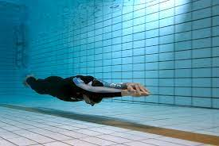

Technique
Stroke: Advanced
This will be stuff about freestyle and such
This will be stuff about backstroke and stuff
This will be stuff about breaststroke and stuff
THis will be stuff about butterfly

Practice
Drills
- 11s - Freestyle: keep both arms out parallel in an '11' shape. When you pull with one arm, keep the other still until you move it back around to the front, then take a stroke with your other arm. This will teach you tempo for freestly
- Tapping
- Button
- Kick
- Scull
- X-Second Pull - Breastroke